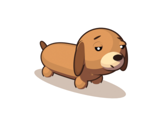
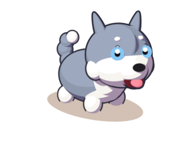

Nothing hatches yet. This stage built the ground the pets will stand on: a game core that keeps time honestly, a simulator to watch it in, the first sketches of both creatures, and a public home on GitHub. Spot the ideas, run the experiments and collect the stickers.

Specimen A · the sausage dog · babyTemperament: cheeky. Field marks: long low body, one raised brow, an unimpressed smirk. Placeholder until the moodboards land.

Specimen B · the husky · babyTemperament: boisterous. Field marks: grey mask, curled tail, tongue out, eyes locked on you. Placeholder until the moodboards land.
One game core, three ways to run it. The core never talks to hardware directly; everything goes through small interfaces, so the same code runs in tests on your Mac, in the simulator window, and on the Core2.
flowchart LR
subgraph core["lib/petcore · pure C++"]
SIM[Simulation
needs + hidden health]
SCH[Schedule
school · bedtime · holiday]
CLK[Clock
monotonic + accelerated]
TUN[Tuning.h
every number]
end
T["native
27 Unity tests"] --> core
S["sim
SDL window on the Mac"] --> M["src/m5
M5Unified platform"]
D["core2
the device"] --> M
M --> core
CI["GitHub Actions"] -. runs .-> T
CI -. builds .-> S
CI -. builds .-> D
firmware/lib/petcore/: needs, schedule, clocks, all tested.pio run -e sim -t exec: the real M5 graphics library in a Mac window.pio run -e core2: compiles today, flashes when the boards arrive.art/lib/toon.py plus one script per pet, run headless in Blender.sounds/: fetch, curate, process; 67 clean masters from 30 picks.Each has a real name you can look up. Find it in its habitat, then mark it spotted.
Run firmware commands from the firmware/ folder. Undo any edits afterwards by running git restore . from the repo root, which puts every tracked file back exactly as committed.
stage-1-foundations until the pull request merges it into main..gitignoredocs/private.md, renders, processed sounds, moodboards.Locked stickers show as grey silhouettes, the same trick the pets' awards book will use. Progress is saved in this browser only.